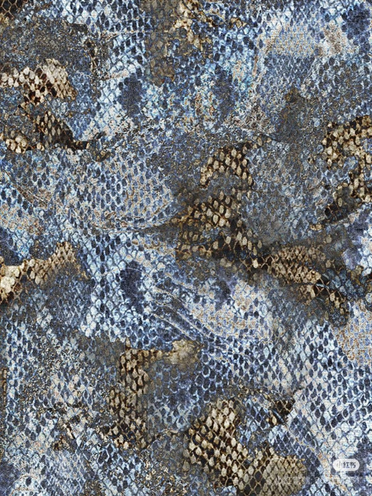
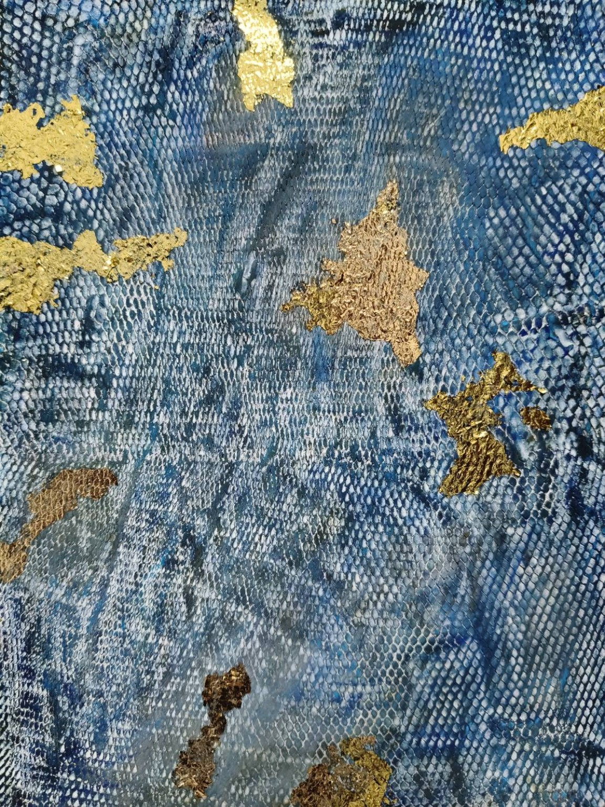
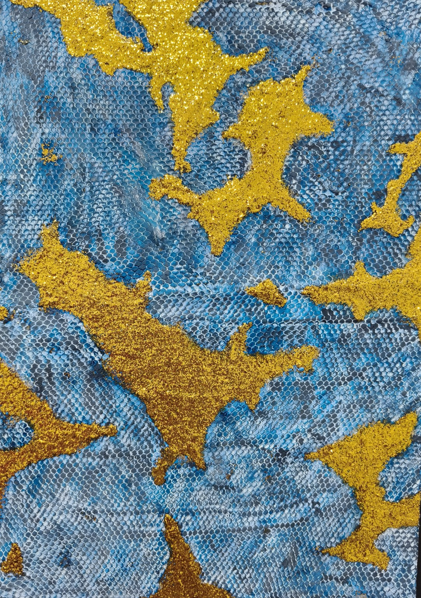
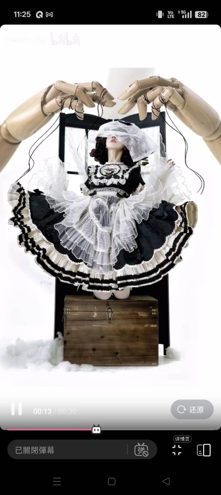
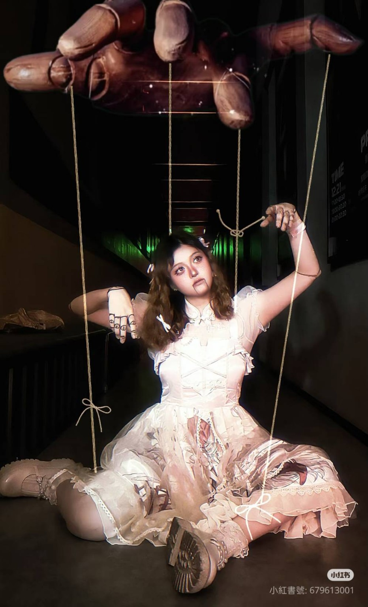
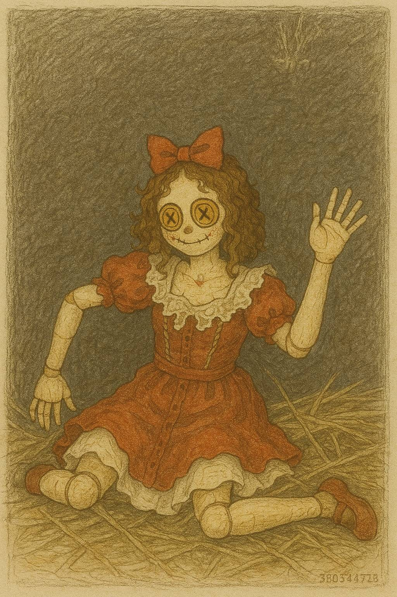
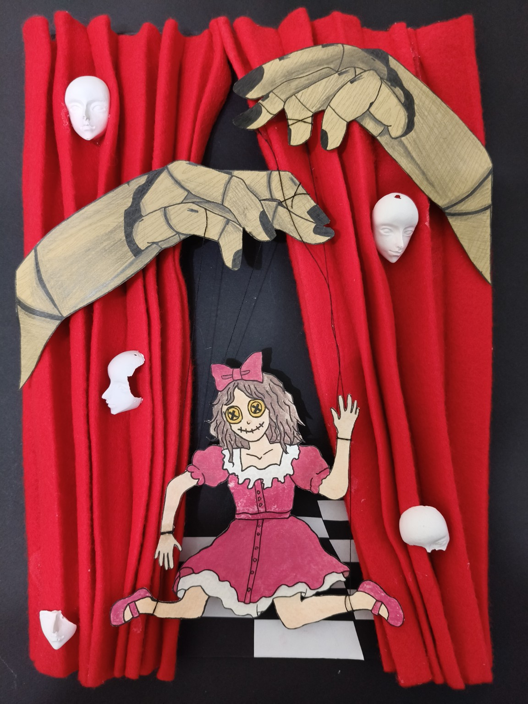
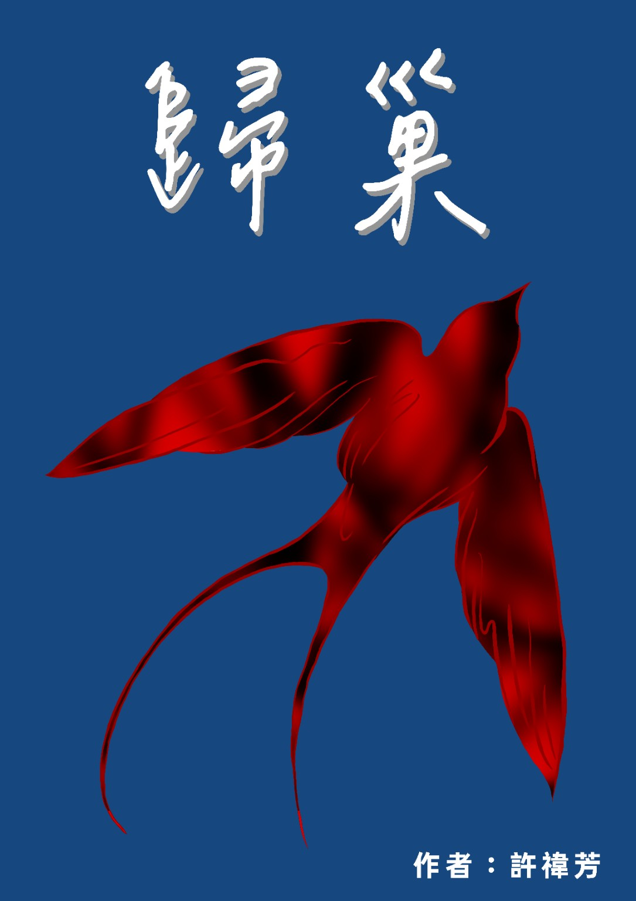
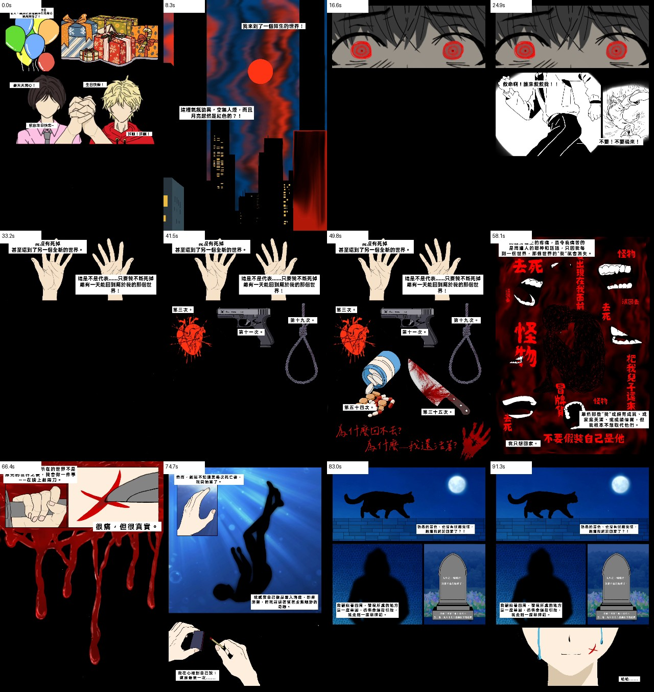

WORK 01
蛇鱗材質實驗
「最好讓人想不出材料是什麼。」
課堂要求找一張素材圖片，利用不同材料模仿它的質感。我選了蛇鱗，但不想直接用「本來就像鱗片」的材料。
最後我想到的是水槽過濾網。網目的重複結構很像放大的蛇鱗，再搭配石膏、水彩與金粉，讓日常消耗品變成有機表皮。
水槽過濾網 + 石膏 + 水彩 + 金粉



我比較像是什麼都想接觸一點的人。看到陌生的材料、課程、工具或故事形式，我會想知道「如果換個方法，它還能變成什麼？」
我知道自己真正比較有自信的地方在靈感、聯想和找方法。技術不一定一開始就會，但我會先把目標想清楚，再去找合適的工具、材料或替代方案，把腦中的畫面做出來。
餐飲工作則給了我另一個很實際的底盤：現場節奏、清潔整理、分工協作、同時處理多件事情，以及把事情好好收尾。
這些作品不是要證明我是藝術家，而是讓人看見我碰到題目時，會怎麼聯想、拆解，再找方法完成。
WORK 01
「最好讓人想不出材料是什麼。」
課堂要求找一張素材圖片，利用不同材料模仿它的質感。我選了蛇鱗，但不想直接用「本來就像鱗片」的材料。
最後我想到的是水槽過濾網。網目的重複結構很像放大的蛇鱗，再搭配石膏、水彩與金粉，讓日常消耗品變成有機表皮。



WORK 02
我不擅長畫畫，但我會自己找路。
題目只有兩個條件：自己發想，而且不能只是平面。我想做一個帶有舞台、操控與不安感的提線木偶場景。
手繪不是我的強項，所以我先用數位與 AI 工具把真人參考轉成較適合描繪的圖像，再列印、描線、拼貼與組裝。白色的臉則直接沿用上一件作業剩下的石膏。
先有想法，再找材料、工具和做法，把它變成可以被看見的樣子。




WORK 03
老師沒規定配樂，是我自己覺得「還少一點」。
靈感來自電影《彗星來的那一夜》。我喜歡熟悉世界突然裂開、角色開始無法確定自己身處哪個現實的感覺，因此把平行世界、死亡與錯位感放進自己的故事。
漫畫完成後，我另外加入自己挑選的 BGM，做成有時間推進的版本。對我來說，聲音不是裝飾，而是能改變停留、節奏與情緒的另一個敘事工具。
我偏好的氣氛： 懸疑、未知、失控感，以及「熟悉的東西突然不太對勁」。

《彗界》BGM 版本

2025.02 — 2026.05
餐前備料、醬料調製、前菜／炸物／主食製作、擺盤出餐、餐具確認與外場協調。熟悉尖峰時段多工、工作區整理與收尾。
2021.09 — 2025.06
主修餐旅與烘焙相關專業；大學期間主動選修外系創作課程，接觸材質實驗、立體作品與漫畫創作。
備料、整理、清潔、協作，依現場狀況調整工作順序。
中餐、烘焙、飲料調製相關訓練與丙級證照。
從日常材料與既有元素中，快速找到新的用途與組合。
遇到不熟悉的方法時，會找替代工具、參考或流程讓目標落地。
我不急著決定自己「只能是什麼」。
如果你正在找一個願意動手、願意學、腦袋常常多繞一個彎的人，歡迎找我聊聊。
z3957290@gmail.com